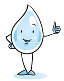
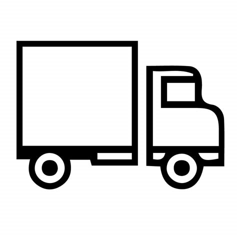
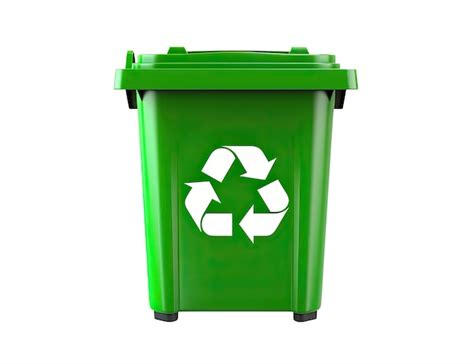

Licencias y permisos
Trámite de licencias de conducir y permisos temporales.
Ver requisitos de licenciasAccede fácilmente a los servicios locales
Bienvenido al portal oficial de trámites y servicios para los ciudadanos.
Trámite de licencias de conducir y permisos temporales.
Ver requisitos de licencias
Consulta tus recibos y reporta fallas en el servicio.
Reportar falla de agua
Consulta rutas, horarios y tarjetas de transporte.
Consultar rutas de transporte
Conoce los centros de acopio y horarios de recolección.
Ver centros de acopioPara realizar cualquier trámite es necesario presentar identificación oficial vigente y comprobante de domicilio reciente.
Nuestras oficinas principales se ubican en Av. Ciudadanía #123, Col. Centro, Ciudad de México.
Agenda tu cita llamando al 55-1234-5678 o enviando un correo a citas@servicios.gob.